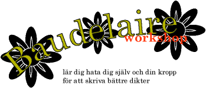

Schnaabelaaze inbjuder härmed alla läsare till en weekendkurs i hur man lär sig förakta sig själv och sin kropp för att kunna skriva poesi!
"Jag heter Kasper. Jag är ful och äcklig. Jag hatar min kropp." Så börjar kurshäftet till vår lilla workshop. Du får bekanta dig med livliga beskrivningar av maskar, syfilis, infektioner och narkotiska droger.
Ingen har någonsin skrivit en bra dikt utan att hysa ett sunt kroppsförakt. Nu kan även du göra din poetiska stämma hörd. Under kursens gång får du bekanta dig med flera historiskt betydelsefulla metoder så som späkning, självstympning och misslyckade självmordsförsök. Kursen innehåller både teori och praktik.
De dikter som resulterar kommer troligtvis att publiceras i tidningen Ordfront (hoppas vi). Här är några kommentarer från elever under tidigare kurser:
"Det var helt perfekt. När jag hade piskat mig på ryggen 100 gånger med en stållinjal blev mina dikter bra, när jag hade skurit mig i tinningen med en rostig kniv vart de riktigt bra, och när jag sköt mig själv i buken blev mina dikter riktigt mästerliga".
"Den här kursen öppnade verkligen mina ögon. Innan jag gick den hade jag fortfarande en förfelad uppfattning om att kroppen var mitt tempel osv. Nu vet jag bättre."
"Efter att ha gått på den här kursen har jag utvecklat en speciellt effektiv bantningsmetod som faktiskt gör att man skriver bättre dikter samtidig som man tappar flera kilo per dag".